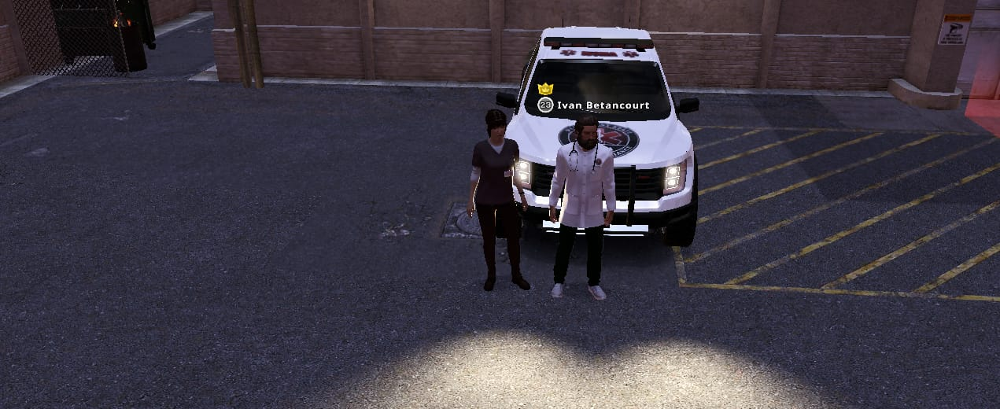
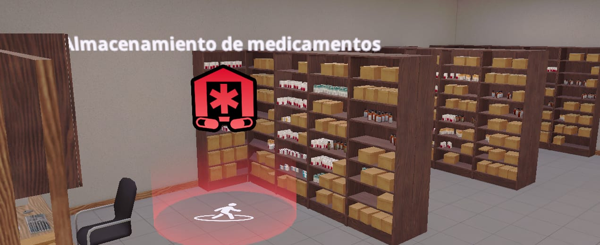
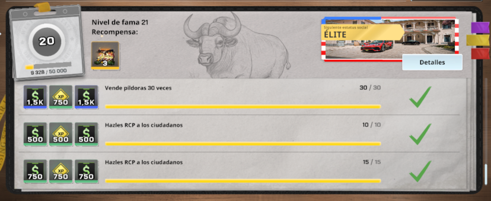

06
🖼️ Flyer del ascenso
🔍 Tocá para verlo en grande.
Misma pasión · Mayor responsabilidad
Advertencia: para conservar tu cargo es indispensable demostrar compromiso constante, cumplir con las tareas asignadas y participar activamente en uno de los tres departamentos establecidos.


Evidencia de tu participación en 8 patrullajes aceptados por el instructor.
🔍 Tocá para ver el detalle

Evidencia de haber formado a 3 batas azules como entrenadores.
🔍 Tocá para ver el detalle
No tener reprimenda activa en la semana.

Vender 30 píldoras en la semana.
🔍 Tocá para ver ejemplo

Realizar 15 RCP en la semana.
🔍 Tocá para ver ejemplo
🔍 Tocá para verlo en grande.
Cada semana, el médico residente tiene que presentar evidencia de su participación en 8 patrullajes. Solo cuentan los patrullajes aceptados por el instructor.
Presentar evidencia de haber formado a 3 batas azules como entrenadores.
No tener ninguna reprimenda activa en la semana del ascenso.
Como parte del screen de tareas semanal, vender 30 píldoras en la semana.

Como parte del screen de tareas semanal, realizar 15 RCP en la semana.
Además de los requisitos de ascenso, cada rango tiene tareas propias dentro de la facción. Cumplirlas es parte del compromiso constante que se pide para mantener la bata.